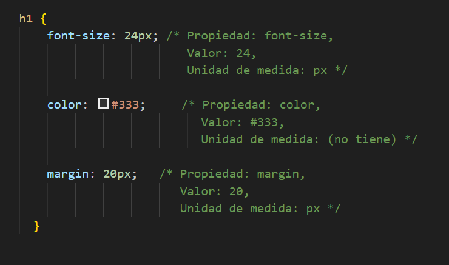
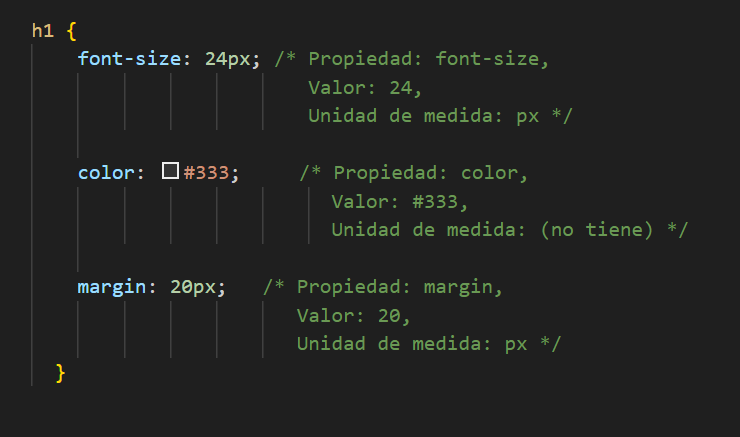

Ir al index principal↩
¿Que que son propiedades?
✔Las propiedades CSS son parámetros que se utilizan para dar estilo a los elementos HTML en una página web, como
el color, tamaño, fuente, márgenes y fondos de los elementos.
Se definen en un bloque de reglas CSS, donde el nombre de la propiedad se separa del valor por dos puntos
¿Como funcionan?
- Selector:
Primero, se elige un elemento de la página HTML (como un p para un párrafo o un h1 para un encabezado) a
través de un selector.
- Declaración:
Dentro de las llaves {} asociadas al selector, se escriben las propiedades que se quieren aplicar.
- Propiedad:
El nombre del estilo que se quiere modificar, por ejemplo, font-size para el tamaño de la fuente.
- Valor:
El valor que se le da a la propiedad, por ejemplo, 16px para 16 píxeles
 

Ejemplo de propiedades Comunes
- Para el texto:
color: define el color del texto.
font-family: especifica el tipo de letra.
font-size: establece el tamaño de la fuente.
font-weight: controla el grosor de la fuente.
text-align: alinea el texto (izquierda, centro, derecha, justificado).
text-decoration: añade efectos como subrayados o tachados.
- Para el "modelo de caja" (márgenes y bordes):
margin: crea el espacio fuera del borde del elemento.
padding: crea el espacio entre el contenido del elemento y su borde.
border: define el borde del elemento (color, grosor y estilo).
- Para fondos:
background-color: establece el color de fondo de un elemento.
background-image: agrega una imagen de fondo.
background-repeat: define cómo se repite una imagen de fondo.
Las propiedades son la herramienta principal para dar estilo y personalizar la apariencia de los sitios web,
haciendo el código HTML más limpio al separar la estructura del diseño